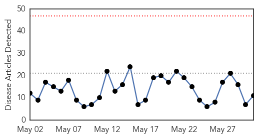
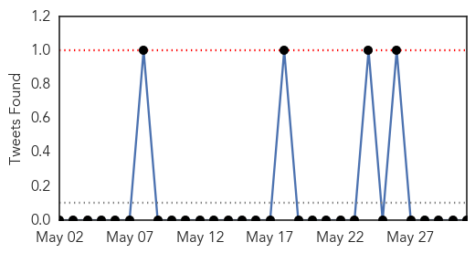
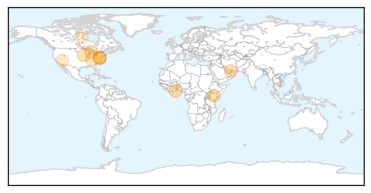

Hepatitis
30-Day Web Trend
30-Day Twitter Trend
0 alerts, 0 warnings

Article Locations


Article Confidences

Top Articles:
-
No articles found for May 31, 2015
Top Tweets:
-
No tweets found for May 31, 2015
Influenza
30-Day Web Trend
0 alerts, 0 warnings

30-Day Twitter Trend
0 alerts, 0 warnings

Article Locations

Article Confidences

Top Articles:
- 0.997
- CDC calls for calm as suspected MERS case tests negative
- 0.992
- Top 5 most disturbing vaccine facts
- 0.977
- H3N2 canine influenza confirmed in Michigan
- 0.977
- Don’t consume sick birds, public advised
- 0.933
- Avian Flu Threatening U.S. Eggs Supply
- 0.778
- Egg Shortages and Rising Prices a Result of Avian Influenza?
- 0.751
- May 31, 2015 Archives
- 0.751
- May 30, 2015 Archives
- 0.751
- May 30, 2015 Archives
- 0.681
- Nevada ranks dead last in health spending
- 0.593
- Poultry farmers keep eye on bird flu
Top Tweets:
-
No tweets found for May 31, 2015